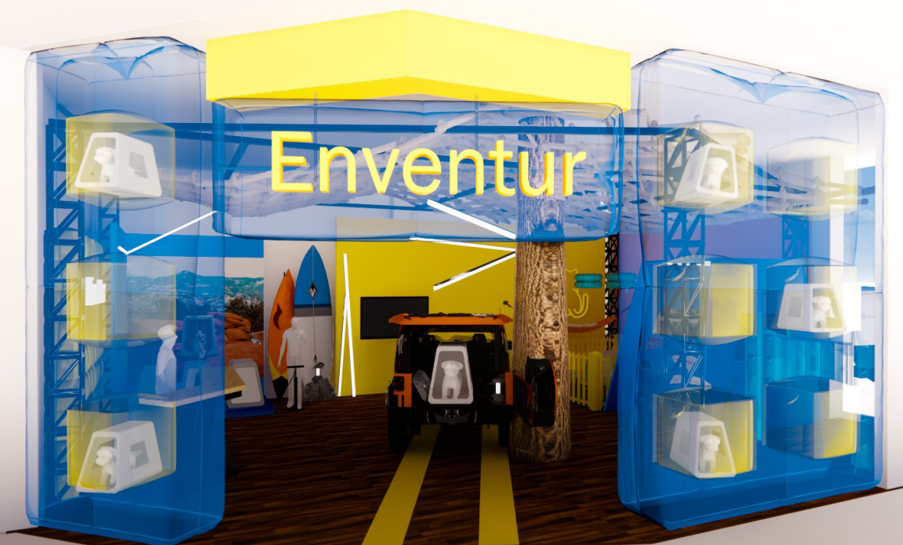

Hi,
I'm Xinrui

SPIRITUAL SPACE- INNER SLEF

IMMERSIVE FITNESS

INTERSTELLAR MOVIE INSPIRED BATHROOM

SHORE SHOWROOM

ENVENTUR -AN INFLATABLE TRAVEL DOG KENNEL

DINING AREA (KIMONO DISPLAY)

RING -THE CHARMIGN TWIST

HIDDEN AND REVEALED
VI IS DESIGN
About Me
Contact Me